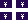
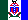
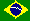
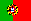
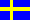

Provincial:
Judo Alberta
 Ishi Yama Judo Club, William Bell, Calgary Ishi Yama Judo Club, William Bell, Calgary
Tolide Judo Kwai, Eric Pearce or Eric Pearce, Fort Saskatchewan
Lethbridge Judo Club, Hans Hantke, Lethbridge
Ralph Paufler, Slave Lake
Kodokwai Judo Club, Bob Anderson, Edmonton
Ni Ten Judo Club, Bernie or Joyce Syrenne, Fort McMurray
Tokai Judo Club, Stuart Hunter, Edmonton
Tokugawa Judo Club, Edmonton
Judo British Columbia
Abbotsford Judo Club, Tokue Suda, Abbotsford
North Delta Judo Club, Bob Webber, Burnaby
Prince George Judo Club, Aline Strasdin, Prince George
Kamloops Judo Club, Henry Uyeda, Kamloops
Aberdeen Judo Academy, John A. and Geri Huntley, Kamloops
BC Ju-jitsu Association, Jean Galli, Terrace
Victoria Judo Club, Barrie W. Aldrich or Dana J. Bamford, Victoria
Langley Judo Club, Henry Kaliciak, Langley
Lake Country Judo Club, Gary Smith, Winfield
Creston Judo Club, Dirk Stoltenberg, Creston
Ardjoena Judo Club, Ian Johnston, Cranbrook
Invermere Judo Club, Bob Gadsby, Invermere
Judo Manitoba
 Newbrunswick Newbrunswick
Newfoundland & Labrador Judo Association
Judo Nova Scotia
Paul Matthews, Port Hawkesbury
Dartmouth Judo Club, Ryan Baker, Dartmouth
James Slaunwhite, Halifax
Halifax Judo Academy, Bruce Heaton, Dartmouth
KanoKai Judo Club, Bob MacEachern, Westville
Dalhousie University Judo Club, Halifax
Kanokai Judo Club, New
Glascow
Judo Ontario
 Judo Quebec
Judo Saskatchewan
 Judo Yukon
National Links:
International:
Kodokan International Judo Centre
Confederación Argentina de Judo
Judo Federation of Australia
Belgian judo federation
 Federação de Judô do Estado do Rio de Janeiro
Judo Canada
Finnish Judo Association
Fédération Française de Judo
German Judo Federation
The Norwegian Judo Association
 AJAA (Portuguese Judo Association)
The Scottish Judo Federation
 Swedish Judo Association
The British Judo Association
United States Judo Federation
|